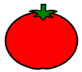

Pomodoro Timer

Start
Pause
Stop
Pomos: #0
The Online Time Management Tool
The Pomodoro Technique
The Pomodoro is a time management tool to help you get things done. The method was created by the entrepreneur Francesco Cirillo in the early 1990s. The tool was named Pomodoro because of the tomato-shaped timer Francesco Cirillo used at that time.
The technique consists of setting a 25-minute interval (called "pomodoro") to focus on the tasks you need to get done. Then it comes a 5-minute interval when you can rest your mind, get some air, go to the bathroom, get some water, and so on. This process repeats few times and in the fourth break you take a longer interval, usually 15 to 30 minutes.
How to Use the Tool
The magic of the Pomodoro Technique Tool is that it is really easy to use, even if you do not use this website or any other application. To start using this method, write down the tasks you need to get done, set the clock to 25 minutes and start working. After the work period is done, set another alarm clock for 5 minutes to get some rest. The whole cycle is shown below.
Tips on How to Get the Most Out of the Intervals
The work time is the period when you need to focus a 100% on your tasks. Try not to go get some water or go to the bathroom during this activity. Try not to use any social media either, like Facebook or Instagram, unless they are part of your job. The break times are opportunities to rest and get your mind refreshed. You may use these intervals to do common daily activities, such as cleaning the house or washing the dishes. You may also use it to do some exercise, such as push-ups, sit-ups or stretching. If you do not want to spend your breaks these ways, you can use your intervals to analyze your tasks and get a broader view of what you are working on.
Time to set the clock and have fun with the Pomodoro Technique.
About the website
This website was created to make it easier to use the Pomodoro Technique. You can use the Pomodoro Timer in the first section of the website. The tool is already set with the intervals explained above. In case you want to change any interval or frequency, you can use the settings' button in the superior part of the tool.
The application also comes with the to-do list feature next to the timer. Add anything you have to get done and keep track of it during your work times. In case you do not need the to-do list, or prefer to use another tool, you can just press the button “hide tasks” next to the settings' button and use only with the clock.
If you find any inconsistences on the website or if you have any suggestions to improve this tool, please feel free to contact us through email. We’ll be happy to help.
Pomodoro Settings
Pomodoro
You left with a pomodoro session still running.
Would you like to continue where you left off?
Pomodoro
Are you sure you want to reset current session?